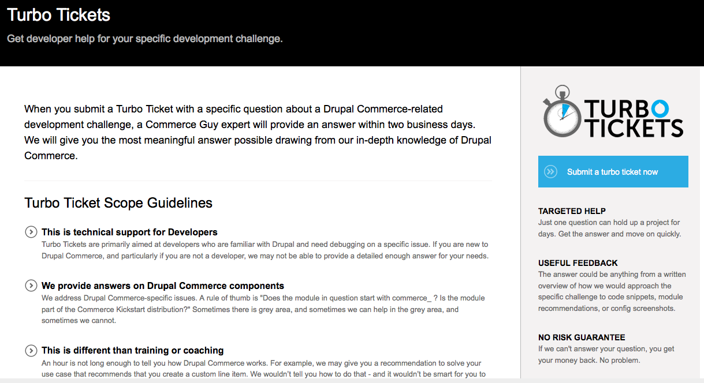
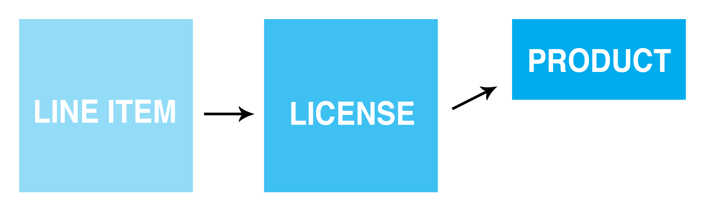

The newest developments in digital ecommerce
Jonathan Sacksick / @jsacksick
Jonathan Sacksick

Web developer at Commerce Guys
Maintainer of Commerce Kickstart v2
Search API, Commerce Search API, Other Commerce contribs.

Paris, France · London, England · Ann Arbor, MI, USA

Built from scratch on Drupal 7
Minimalistic and flexible
Uses Views for all listings
Uses Rules for business logic
Relies on "essential contribs" and distributions to complete the experience

Most popular Drupal distribution
(8k installs)
Streamlined administration optimized for common tasks
Responsive frontend theme
Enhanced product marketing
(image zooms, slideshows, etc)
Faceted product search
Built-in payment gateways,
third party tools
Context
Requirements
Manage subscriptions to services
Sell support tickets
Handle renewable subscriptions

Existing solutions
- Commerce Subscription
- Commerce Subscription Products
- Commerce File 1.x
- Commerce Recurring (For the recurring part).
- ... And more.
Solutions we built
Commerce License & Commerce License Billing

Commerce License (Features)
- Defines a License entity type
- License types are ctools plugins (Thanks to Entity Bundle Plugin)
Data model

Data model

Data model
Data model

Demo
Resources
- Commerce License
http://drupal.org/project/commerce_license - Commerce License Billing
http://drupal.org/project/commerce_license_billing - Commerce Guys Marketplace
http://marketplace.commerceguys.com
Vertical Slides
Slides can be nested inside of other slides, try pressing down.
Basement Level 1
Press down or up to navigate.
Basement Level 2
Cornify

Basement Level 3
That's it, time to go back up.
Slides
Not a coder? No problem. There's a fully-featured visual editor for authoring these, try it out at http://slid.es.
Point of View
Press ESC to enter the slide overview.
Hold down alt and click on any element to zoom in on it using zoom.js. Alt + click anywhere to zoom back out.
Works in Mobile Safari
Try it out! You can swipe through the slides and pinch your way to the overview.
Marvelous Unordered List
- No order here
- Or here
- Or here
- Or here
Fantastic Ordered List
- One is smaller than...
- Two is smaller than...
- Three!
Transition Styles
You can select from different transitions, like:
Cube -
Page -
Concave -
Zoom -
Linear -
Fade -
None -
Default
Themes
Reveal.js comes with a few themes built in:
Default -
Sky -
Beige -
Simple -
Serif -
Night
Moon -
Simple -
Solarized
* Theme demos are loaded after the presentation which leads to flicker. In production you should load your theme in the <head> using a <link>.
Global State
Set data-state="something" on a slide and "something"
will be added as a class to the document element when the slide is open. This lets you
apply broader style changes, like switching the background.
Custom Events
Additionally custom events can be triggered on a per slide basis by binding to the data-state name.
Reveal.addEventListener( 'customevent', function() {
console.log( '"customevent" has fired' );
} );
Slide Backgrounds
Set data-background="#007777" on a slide to change the full page background to the given color. All CSS color formats are supported.
Image Backgrounds
<section data-background="image.png">Repeated Image Backgrounds
<section data-background="image.png" data-background-repeat="repeat" data-background-size="100px">Background Transitions
Pass reveal.js the backgroundTransition: 'slide' config argument to make backgrounds slide rather than fade.
Background Transition Override
You can override background transitions per slide by using data-background-transition="slide".
Clever Quotes
These guys come in two forms, inline:
“The nice thing about standards is that there are so many to choose from”
and block:
“For years there has been a theory that millions of monkeys typing at random on millions of typewriters would reproduce the entire works of Shakespeare. The Internet has proven this theory to be untrue.”
Pretty Code
function linkify( selector ) {
if( supports3DTransforms ) {
var nodes = document.querySelectorAll( selector );
for( var i = 0, len = nodes.length; i < len; i++ ) {
var node = nodes[i];
if( !node.className ) {
node.className += ' roll';
}
}
}
}
Courtesy of highlight.js.
Intergalactic Interconnections
You can link between slides internally, like this.
Fragmented Views
Hit the next arrow...
... to step through ...
any type- of view
- fragments
Fragment Styles
There's a few styles of fragments, like:
grow
shrink
roll-in
fade-out
highlight-red
highlight-green
highlight-blue
Spectacular image!

Export to PDF
Presentations can be exported to PDF, below is an example that's been uploaded to SlideShare.
Take a Moment
Press b or period on your keyboard to enter the 'paused' mode. This mode is helpful when you want to take distracting slides off the screen during a presentation.